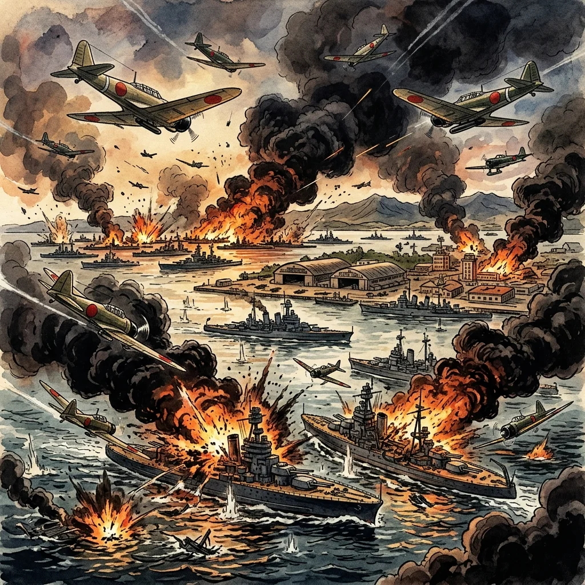
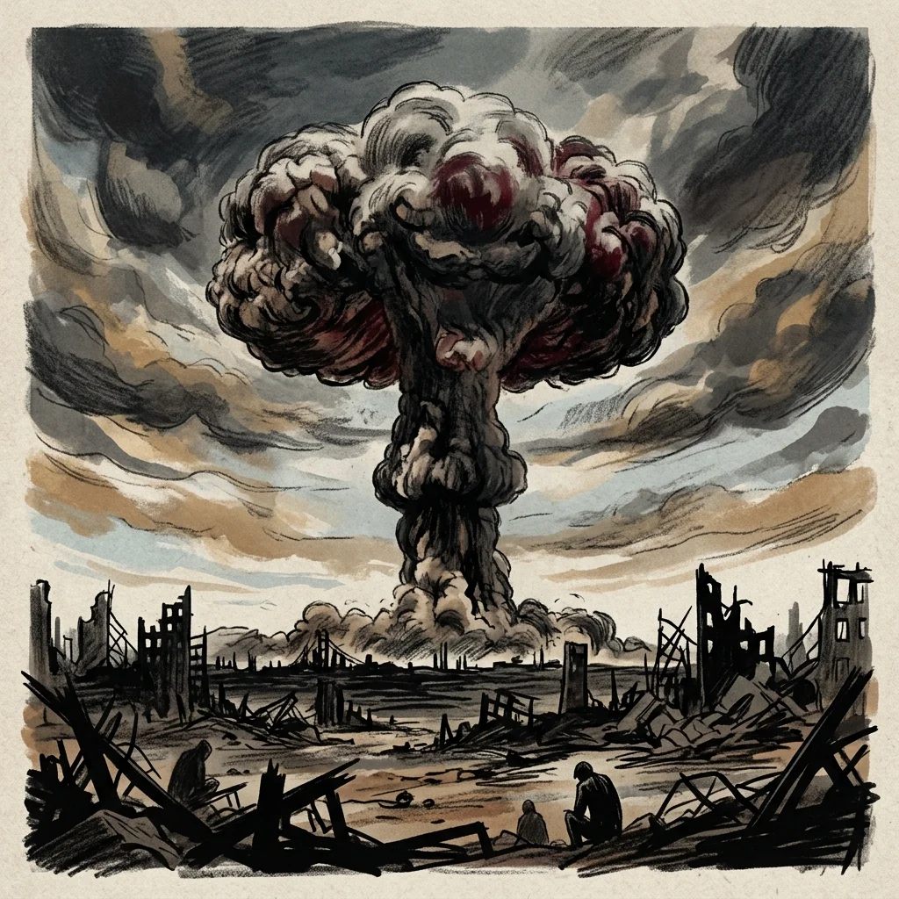

30. 第二次世界大戦と太平洋戦争
1930年代の後半、日本は中国との間で終わりなき泥沼の戦争に突入し、さらにヨーロッパで始まった第二次世界大戦の世界的な大戦火へと巻き込まれていきました。そしてその結末は、日本史上最大の破滅と、新たな平和国家としての再出発の始まりを意味していました。今回は、日中戦争から太平洋戦争、戦時下の国民の暮らし、そして1945年8月15日の終戦までの道のりを解説します！
1. 日中戦争（にっちゅうせんそう、1937年）と国家総動員
1937年、北京郊外の盧溝橋（ろこうきょう）で日本軍と中国軍が衝突しました（盧溝橋事件）。これをきっかけに、宣戦布告を行わないまま、泥沼の日中戦争が始まりました。
中国側は、それまで対立していた国民党（蒋介石）と共産党（毛沢東）が協力して「抗日民族統一戦線（第二次国共合作）」を結成し、アメリカやイギリスからの支援（援蒋ルート）を受けながら日本軍に激しく抵抗しました。
① 国家総動員法（こっかそうどういんほう、1938年）
長引く戦争を支えるため、政府は1938年に国家総動員法を制定しました。これにより、帝国議会の承認を経なくても、政府が戦争のために必要な物資や人員（兵士・労働者など）をすべて強制的に動員・調達できるようになりました。
国内では、すべての政党が解散させられ、戦争を支援するための巨大な国策組織である大政翼賛会（たいせいよくさんかい）に統合されました（一国一党体制）。また、植民地であった朝鮮や台湾でも、創氏改名（名前を日本風に変えさせる）や日本語の使用を強制する厳しい「皇民化政策」が行われました。
2. 太平洋戦争（たいへいようせんそう、1941年）の開始
ヨーロッパでは、1939年にドイツがポーランドに侵入したことで、イギリス・フランスが宣戦して第二次世界大戦が始まっていました。日本は1940年、ドイツ・イタリアと日独伊三国同盟を結び、枢軸国（すうじくこく）の一員として参戦する姿勢を固めました。
東南アジアの資源（石油やゴム）を求めて南方に軍を進めた日本に対し、アメリカやイギリスは「日本への石油の輸出禁止」などの厳しい経済制裁（ABCD包囲網）を敷き、日本を追い詰めました。
① 真珠湾（しんじゅわん）攻撃（1941年12月8日）
1941年12月8日（日本時間）、追い詰められた日本軍はハワイの真珠湾にあるアメリカ海軍基地を突如奇襲しました（真珠湾攻撃）。同時にマレー半島にも上陸しました。こうして、アメリカ・イギリスを相手とする太平洋戦争（大東亜戦争）が勃発しました。

図1：ハワイの真珠湾を奇襲し、太平洋戦争の火蓋を切った日本軍のイメージ
3. 戦時下の国民生活（総力戦の影響）
戦争の初期は日本軍が優勢でしたが、1942年6月のミッドウェー海戦での大敗北を機に、日本は完全に劣勢に立たされました。国内の暮らしは戦争のために極めて過酷なものとなりました。
① 配給制（はいきゅうせい）と切符制の導入
主食の米や砂糖、衣類などの生活必需品が極端に不足し、すべて政府が配る配給（あるいは配給切符）がなければ手に入らなくなりました。人々は常に飢えと物資不足に苦しみました。
② 学童疎開（gあくどうそかい）
アメリカ軍の爆撃機（B29）による都市部への空襲（東京大空襲など）が本格化すると、都市部の小学生たちは親元を離れ、空襲の危険が少ない農村のお寺などに集団で避難しました。
③ 学徒出陣（がくとしゅつじん）と勤労動員（きんろうどういん）
兵士が不足したため、それまで免除されていた文系の大学生も兵士として戦場へ送られました（学徒出陣）。また、学校の授業は中止され、中学生や女学生、未婚の女性たちは軍需工場で兵器や物資をつくるために働かされました（勤労動員）。
4. 敗戦と終戦（1945年）
1945年に入ると、日本は完全に壊滅状態へ追い込まれました。6月には沖縄県にアメリカ軍が上陸し、住民を巻き込んだ悲惨な地上戦（沖縄戦）が行われ、多くの命が失われました（ひめゆり学徒隊の悲劇など）。
① 広島・長崎への原子爆弾投下とソ連参戦
- 8月6日：アメリカ軍によって広島に世界で初めての原子爆弾（原爆）が投下されました。
- 8月9日：長崎に二発目の原子爆弾が投下されました。この日、ソ連が日ソ中立条約を破って満州などに攻め込んできました。

図2：一瞬にして多くの人命と街を消し去った、広島の原子爆弾投下のイメージ
② 終戦（1945年8月15日）
これ以上の戦争継続は不可能と判断した日本政府は、連合国が突きつけた無条件降伏の要求である『ポツダム宣言』を受諾することを決定しました。
1945年8月15日、昭和天皇のラジオ放送（玉音放送）を通じて、戦争が終わったことが国民に伝えられました。こうして、日中戦争から8年、太平洋戦争から4年に及んだ日本の長い戦争は幕を閉じました。満州事変以降の15年間にわたる戦争の時代が終わったのです。
🔥 この単元のテスト対策・暗記のコツ
-
★
日中戦争（1937年）と国家総動員法（1938年）の目的（記述頻出）：
・1937年：「戦（1937）長引く日中戦争」
・国家総動員法の目的：「帝国議会の承認なしに、政府が戦争のための物資や人力を強制的に動員できるようにするため」 -
★
太平洋戦争の開始（1941年12月8日）：
・「いやよい（1941）く真珠湾奇襲」で覚えましょう。ハワイの真珠湾攻撃から始まりました。 -
★
戦時下の語句の区別（一問一答！）：
・子どもたちが農村へ避難：学童疎開
・大学生の招集：学徒出陣
・学生や女性の工場労働：勤労動員 -
★
終戦のプロセスと日付（完全暗記！）：
・8月6日：広島に原爆投下
・8月9日：長崎に原爆投下。ソ連の参戦
・8月15日：玉音放送、ポツダム宣言受諾を伝える（終戦記念日）。この順番と日付は100%テストに出ます！